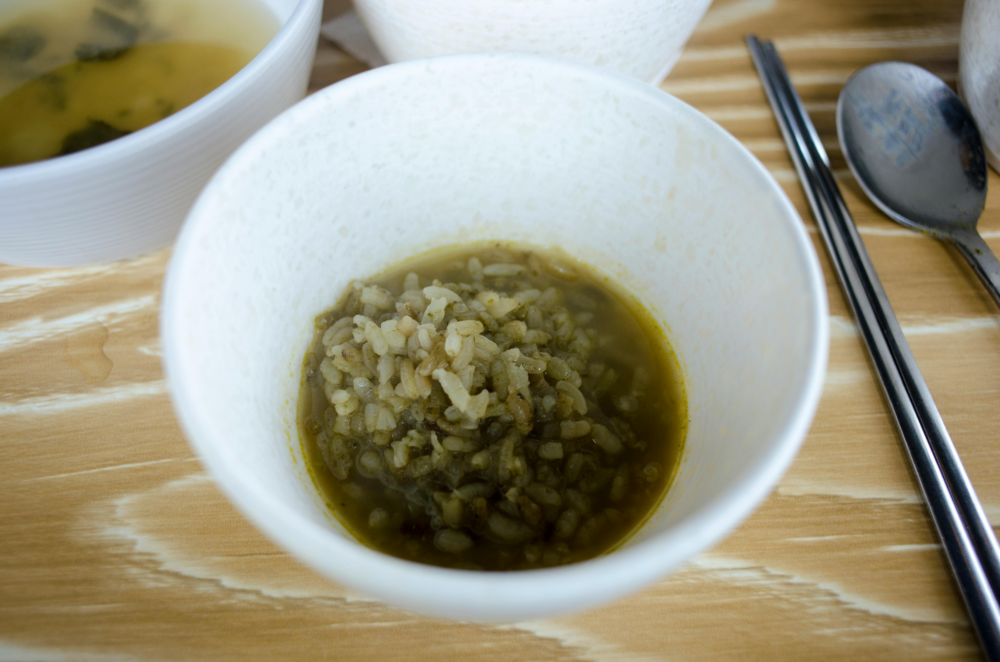

Spinach rice

Photo by makafood
About Spinach rice
Spinach rice is a Greek dish made with spinach and rice. It is a type of pilaf and is described as a typical dish of the Greek countryside that can be eaten hot or cold.
A typical recipe includes long-grain rice and fresh spinach along with dill, cumin, salt, black pepper, red wine vinegar, onion and olive oil, often topped with a fried egg and served with feta cheese and lemon.[1][2][3] Also, the "pairings" of the dish with wine varieties that have been suggested are simple white wines such as Tsantali Agiorgitiko, Boutari Lac de Ros or retsina.
Ingredients
- 70 grams ελαιόλαδο
- 1 κρεμμύδι
- 1 κρεμμύδι
- 1 σκ. σκόρδο
- αλάτι
- πιπέρι
- 2 φρέσκα κρεμμυδάκια
- 1/2 ματσάκι άνηθο
- 250 γρ. ρύζι γλασέ
- 150 γρ. λευκό κρασί
- 1 λίτρο ζωμό λαχανικών
- 1 κιλό σπανάκι
- ξύσμα λεμονιού, από 2 λεμόνια
- χυμό λεμονιού, από 2 λεμόνια
Steps
- Place a saucepan over high heat and add 2 tbsp. olive oil.
- Chop the onion into large pieces, mince the garlic and add to the saucepan.
- Sprinkle with salt and pepper and sauté.
- Finely chop the white part of the spring onions and the dill stalks and add to the saucepan.
- Add the rice and sauté for 1-2 minutes.
- Deglaze with the wine and let the alcohol evaporate completely.
- Reduce the heat to medium, add the stock in batches and stir constantly, for 13-15 minutes until the rice is cooked and al dente.
- Put the spinach in a bowl and add salt.
- Stir and press firmly with your hands to reduce the volume and lose all of its moisture.
- Transfer the spinach to the pot and boil for 3-4 minutes.
- If there is no moisture left in the pot, add 100 gr. of water and the lemon juice.
- Remove the pot from the heat.
- Finely chop the remaining dill and the green part of the spring onions and add them to the pot.
- Add the zest of the lemons and the remaining olive oil, and stir.
- Serve with lemon slices, olive oil, pepper, oregano and feta cheese.
Home